Random Fourier features made Gaussian processes scale to large datasets, but only for stationary kernels, which assume the same smoothness everywhere in the input space. Most real signals are not like that: they are smooth in some regions and change sharply in others. We introduce random wavelet features, which draw wavelet atoms at random locations and scales and therefore capture structure that is local in both space and frequency. They give unbiased, uniformly convergent approximations of a broad class of non-stationary kernels, with positive definiteness guaranteed for any non-negative weighting of locations and scales. Gaussian-process regression with these features keeps exact posterior inference while its cost grows only linearly with the number of observations, the same as random Fourier features. Across climate-field reconstruction on the sphere, the satellite land-surface temperature benchmark, large-scale regression with up to 1.8 million points and Bayesian optimisation, random wavelet features outperform exact Gaussian processes on most climate fields and deep Gaussian processes on the sphere, rank among the best specialised spatial methods, are competitive with state-of-the-art scalable GP solvers, and are more accurate than random Fourier features on every regression benchmark at the same feature count.
A stationary kernel depends only on the offset between two inputs. It therefore imposes one length-scale and one roughness on the whole domain: its covariance matrix is constant along every diagonal, every slice has the same shape, and every prior sample is equally rough everywhere. Real fields rarely behave this way. Random Fourier features rely on this translation invariance, so they cannot represent a kernel whose correlation length changes from place to place, and exact non-stationary Gaussian processes scale cubically with the data.
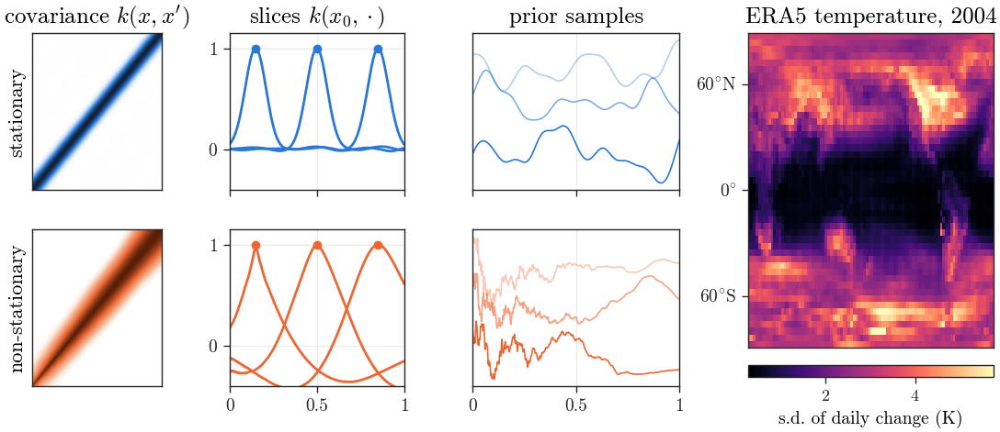
Stationary and non-stationary kernels: covariance matrix, kernel slices at three locations and prior samples. Right: the day-to-day change of ERA5 near-surface temperature varies about tenfold between the tropics and high latitudes, so no single global smoothness fits it.
A wavelet atom is a shifted and dilated copy of one mother wavelet, such as the Mexican hat or the Morlet wavelet. Where a Fourier feature is a sinusoid that extends over the whole domain, an atom is localised in space and in frequency. We define the kernel as the average product of atoms evaluated at two inputs, taken over a distribution of locations and scales. Because it is built from products, it is positive definite for every non-negative weighting, and the weighting may vary across the domain: where fine scales carry more mass the kernel narrows and the prior becomes rough, and elsewhere it stays broad and smooth.
Drawing D atoms at random locations and scales gives a finite feature map whose inner products are an unbiased estimate of this kernel. The Gaussian process then becomes a Bayesian model over the feature weights, and its posterior mean, predictive variance and function samples follow in closed form. Training is a single solve whose cost grows linearly with the number of observations; at the same feature count it needs the same arithmetic as random Fourier features.
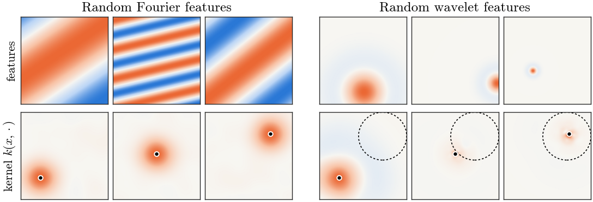
Individual features (top) and the kernels they induce (bottom). Fourier features are global waves and give one kernel shape everywhere; wavelet features are localised atoms at many scales, and the kernel narrows inside the rough region (dashed).
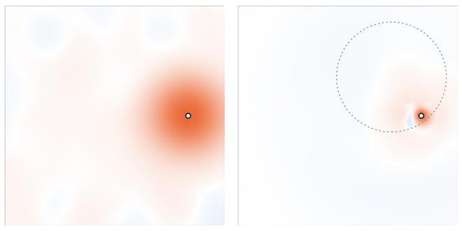
The kernel around a moving anchor point. RFF keeps one shape everywhere; RWF tightens inside the rough region.
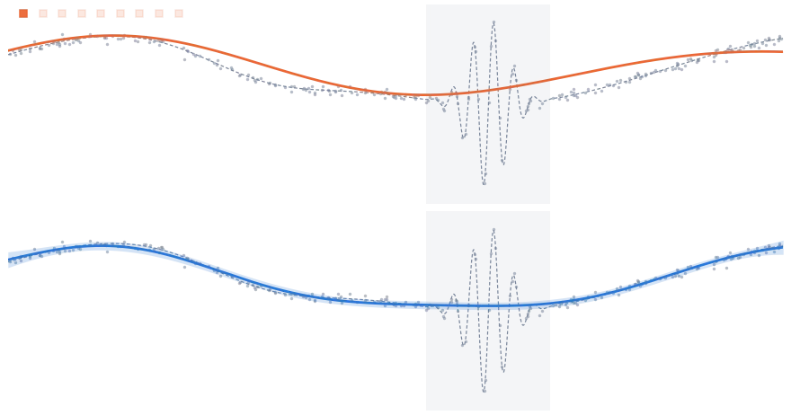
The RWF posterior as wavelet octaves switch on, coarse to fine; fine atoms activate only at the burst. Below, RFF with the same data and feature count.
ERA5 fields on a 48 × 96 grid are reconstructed from 25% of the cells (1,152 stations) and scored on the rest. Inputs are positions on the unit sphere, plus orography and a land flag. Settings are chosen on 2004; the test covers 8 snapshots in 2005 with 3 station draws each.
| Area-weighted RMSE | TemperatureK | Precipitationlog mm | PressurehPa | Humidityg/kg | Zonal windm/s | Merid. windm/s |
|---|---|---|---|---|---|---|
| SVGP, M = 1024 | 2.08 | 1.28 | 3.54 | 1.07 | 5.18 | 5.22 |
| RFF, same features and solver | 2.07 | 1.28 | 4.20 | 1.06 | 5.30 | 5.41 |
| Exact GP | 1.82 | 1.21 | 2.38 | 0.97 | 4.60 | 4.92 |
| RWF | 1.71 | 1.21 | 1.98 | 0.93 | 4.49 | 5.25 |
| RWF, adaptive octave weights | 1.73 | 1.22 | 1.91 | 0.94 | 4.50 | 5.45 |
One RWF fit takes 8–30 s on one GPU with 24k–48k features, and some fields average up to four feature draws; and its 95% intervals cover 92–94% of held-out cells. The adaptive variant has the best CRPS on temperature, pressure, humidity and zonal wind. Settings for every method are chosen on 2004 and evaluated once on 2005.
The S2 regression benchmark of residual deep GPs on manifolds (Wyrwal et al., 2025): a function with singular points at the pole and on the equator, observed with noise on a Fibonacci lattice. All baselines are re-run with the authors' code; a single shallow RWF GP fits in 4–40 s.
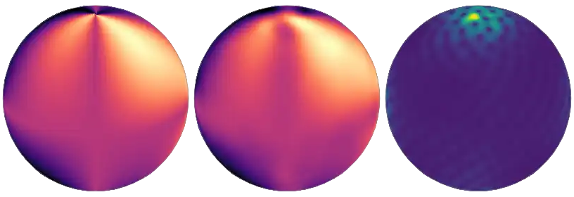
Target, RWF posterior mean and posterior standard deviation from 400 points. Uncertainty concentrates where the function is singular.
| Test NLPD | N = 100 | 200 | 400 | 800 | 1600 |
|---|---|---|---|---|---|
| Residual GP, one layer | −1.32 | −1.42 | −1.46 | −1.47 | −1.47 |
| Residual deep GP, best depth | −1.32 | −1.42 | −1.83 | −2.37 | −2.61 |
| Exact Matérn GP | −1.34 | −1.67 | −2.09 | −2.32 | −2.52 |
| RWF | −1.60 | −2.04 | −2.31 | −2.75 | −2.88 |
Mean over 5 seeds, 5,000 test points. Deep-GP depth (1–5) is the best on test; RWF settings are chosen on a validation split of each training set. Test MSE at N = 1600: RWF 3.2, deep GP 3.6, exact GP 3.6 (×10−4).
The spatial-statistics competition of Heaton et al. (2019): 105,569 observations and 42,740 held-out cells, against methods designed for large spatial data.
| Method | MAE | RMSE | CRPS | Interval score | Coverage |
|---|---|---|---|---|---|
| SPDE † | 1.10 | 1.53 | 0.83 | 8.85 | 0.97 |
| NNGP † | 1.21 | 1.64 | 0.85 | 7.57 | 0.95 |
| LatticeKrig † | 1.22 | 1.68 | 0.87 | 7.55 | 0.96 |
| Periodic embedding † | 1.29 | 1.79 | 0.91 | 7.44 | 0.93 |
| MRA † | 1.33 | 1.85 | 0.94 | 8.00 | 0.92 |
| SVGP, M = 2000 | 1.69 | 2.20 | 1.19 | 10.23 | 0.90 |
| RFF, D = 49,152 | 1.87 | 2.50 | 1.36 | 14.37 | 0.84 |
| RWF, single seed | 1.26 | 1.65 | 0.89 | 7.78 | 0.92 |
| RWF, mixture of 3 seeds | 1.24 | 1.62 | 0.88 | 7.35 | 0.94 |
† As published in Heaton et al. (2019); the seven other published methods have RMSE ≥ 1.80 and interval score ≥ 10.3. Against all twelve published methods, the three-seed mixture is second on RMSE and first on interval score; each seed takes 8 minutes on one GPU.
Test RMSE, mean ± s.d. over 20 random 90/10 splits (5 for Protein). RWF settings are chosen on validation folds inside the training data.
| Test RMSE | Energy | Concrete | Airfoil | Kin8nm | Protein |
|---|---|---|---|---|---|
| SVGP † | 0.68 | 5.92 | 5.18 | 0.10 | 5.40 |
| Deep GP † | 0.48 | 4.55 | 3.66 | 0.09 | 4.35 |
| A-RKHS † | 0.51 | 4.35 | 3.25 | 0.18 | 4.32 |
| RFF, same features and solver | 0.455 ± 0.063 | 5.17 ± 0.63 | 1.85 ± 0.20 | 0.074 ± 0.003 | 4.17 ± 0.07 |
| RWF | 0.415 ± 0.059 | 4.16 ± 0.52 | 1.24 ± 0.17 | 0.070 ± 0.002 | 3.59 ± 0.02 |
† Baselines as reported in Kumar and Chakraborty (2026). Test NLL of RWF: 0.56, 2.83, 1.63, −1.25, 2.69.
On a multi-step function (N = 4,200, 5 seeds), RWF reaches RMSE 0.053 and NLL −1.50, ahead of a stationary exact GP (0.056, −1.45), a two-layer deep GP (0.102), SVGP (0.143) and RFF (0.153). An exact GP with the non-stationary Gibbs kernel is more accurate (0.049, −1.84) but takes eleven times longer and scales cubically in N; with sparse variational inference the same kernel reaches only 0.068. On a smooth signal with a localised burst, RWF is 1.6–2.2 times more accurate than an exact Matérn-1/2 GP at every sample size, and 2.5–2.8 times with adaptive octave weights; with adaptive weights it is also the most accurate model on the Donoho–Johnstone Doppler and HeaviSine signals from N = 512.
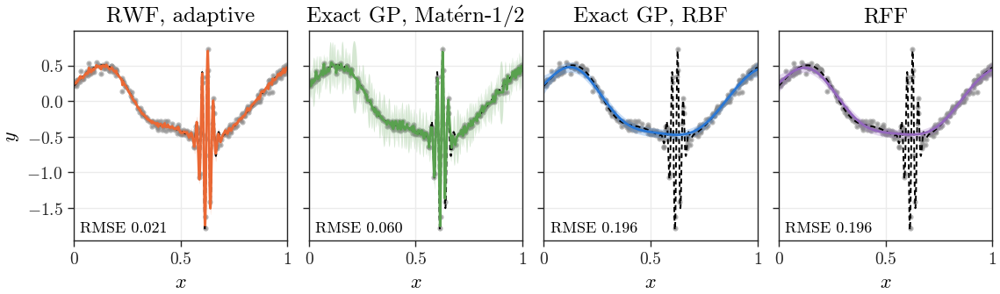
A smooth signal with one high-frequency burst (shaded), N = 256. Error against the truth: RWF with adaptive octave weights 0.021, exact Matérn-1/2 GP 0.060, exact RBF GP and RFF 0.196.
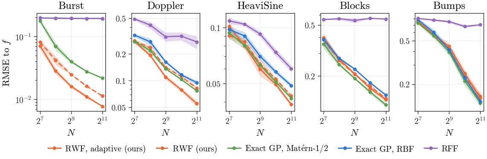
Error against the truth versus the number of training points on the burst signal and the Donoho–Johnstone suite, 5 seeds. Adaptive RWF is best on Burst, Doppler and HeaviSine; an exact Matérn-1/2 GP is about 10% better on the piecewise-constant Blocks and Bumps.
The large-scale benchmark used for modern GP solvers, from 13,500 to 1.8 million training points, with the splits of Lin et al. (2024). RWF learns its hyperparameters on a subsample and then conditions exactly on every training point in one pass, with no iterative solver.
| Test RMSE | Pol | Elevators | Protein | Kegg | 3DRoad | Song | Buzz | HouseElectric |
|---|---|---|---|---|---|---|---|---|
| N | 13.5k | 14.9k | 41.2k | 43.9k | 391k | 464k | 525k | 1.8M |
| SVGP † | 0.10 | 0.37 | 0.57 | 0.10 | 0.47 | 0.80 | 0.32 | 0.12 |
| SGD † | 0.13 | 0.38 | 0.51 | 0.12 | 0.11 | 0.80 | 0.42 | 0.09 |
| SDD † | 0.08 | 0.35 | 0.50 | 0.08 | 0.04 | 0.75 | 0.28 | 0.04 |
| RFF, same features and solver | 0.11 | 0.36 | 0.58 | 0.09 | 0.23 | 0.78 | 0.45 | 0.05 |
| RWF | 0.07 | 0.35 | 0.52 | 0.08 | 0.16 | 0.78 | 0.23 | 0.04 |
† As published in Lin et al. (2024), with hyperparameters fitted beforehand. Mean over 5 splits (3 for HouseElectric), standardised targets. RWF has lower test NLL than SDD on five of these eight datasets, with 95% coverage of 0.92–0.97. Minutes per split on one A100, including hyperparameter learning: Song 4.4, Buzz 4.6, HouseElectric 10.3, against reported solve times of 185, 207 and 48 for SDD, which exclude hyperparameter learning. Bike is omitted because its target is a deterministic function of two input columns.
A posterior draw of an RWF model is a whole function that is cheap to evaluate and differentiable, so maximising one draw per step gives Thompson sampling whose cost does not grow with the number of evaluations. One step stays at 1–2.5 s from 102 to 105 evaluations, while with an exact GP it takes 77 s at 104 and 636 s at 3 × 104. Sixteen joint posterior samples on 106 points take 0.25 s.
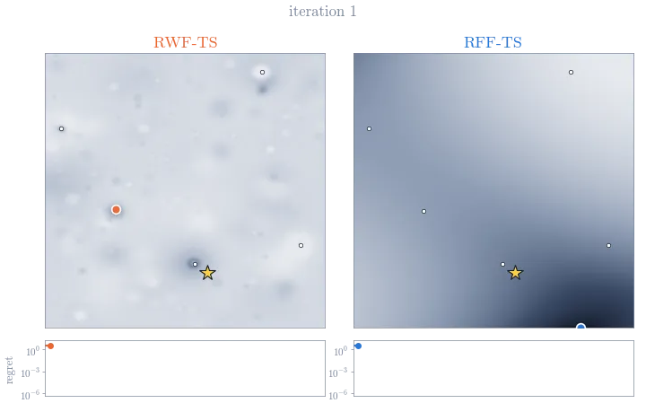
Thompson sampling with RWF on the bumped Branin function, which hides its global minimum in a narrow bump.
| Final simple regret | RWF-TS | RFF-TS | GP-TS | GP-EI |
|---|---|---|---|---|
| Bumped Branin, 2-D | 0.20 | 1.49 | 1.49 | 1.52 |
| Gramacy, 2-D | 1.1 × 10−3 | 0.082 | 0.043 | 0.063 |
| Gramacy embedded in 10-D | 4.9 × 10−8 | 6.0 × 10−3 | 2.2 × 10−6 | 7.0 × 10−5 |
| Hartmann, 6-D | 0.060 | 0.073 | 0.091 | 0.14 |
| Gramacy & Lee, 1-D | 0.19 | 0.13 | 0.038 | 0.093 |
| Levy, 10-D | 3.8 | 23.7 | 2.1 | 1.15 |
Mean over 20 seeds. GP baselines are BoTorch defaults; GP-TS uses pathwise samples. On the plain Branin function RFF-TS is best (1.1 × 10−6 against 0.056 for RWF-TS).
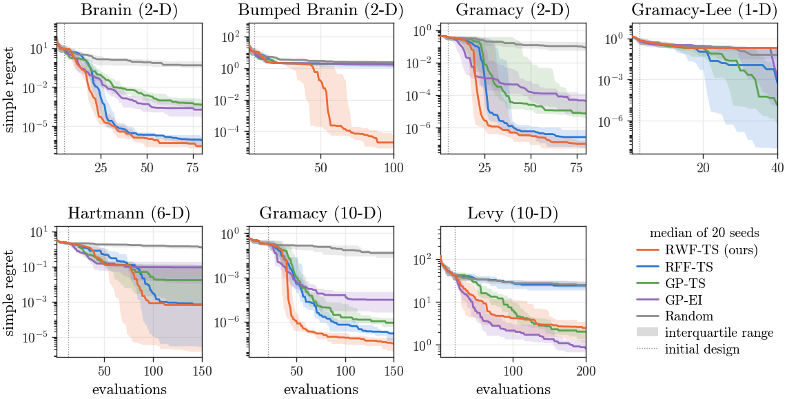
Median simple regret over 20 seeds with interquartile bands.
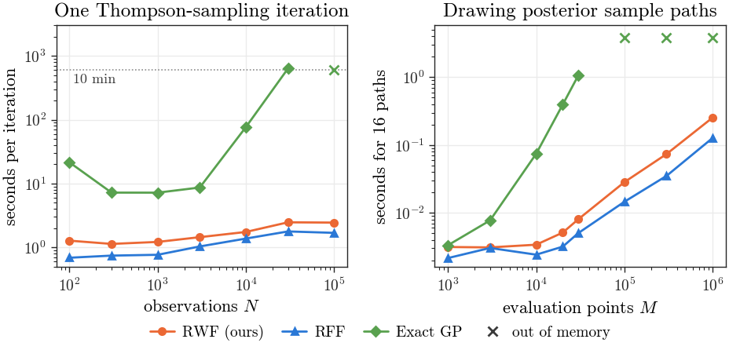
Left: one Thompson-sampling iteration. Right: sixteen joint posterior paths at M points.
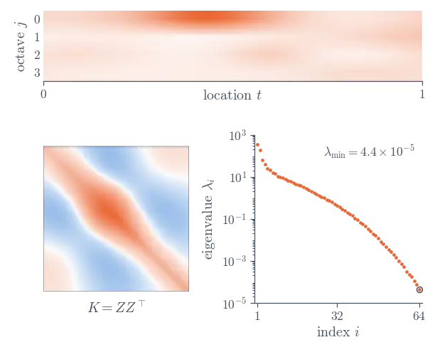
The kernel stays positive semi-definite under any non-negative weighting of locations and scales, so every weighting defines a valid Gaussian process.
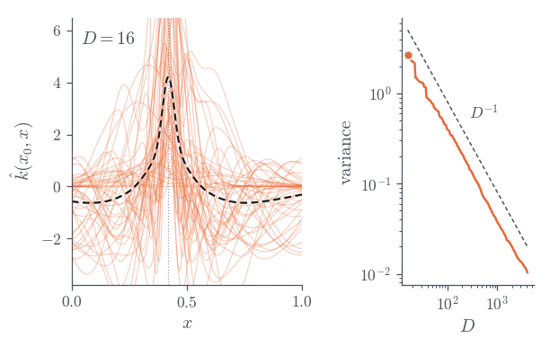
Each random-feature estimate is centred on the true kernel, and its variance falls as one over the number of features.
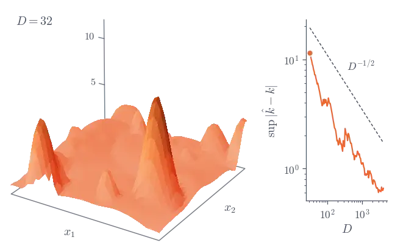
The worst-case error over a compact domain shrinks as one over the square root of the number of features, with high probability.
@inproceedings{kumar2026scalable,
title = {Scalable Random Wavelet Features: Efficient Non-Stationary
Kernel Approximation with Convergence Guarantees},
author = {Kumar, Sawan and Chakraborty, Souvik},
booktitle = {International Conference on Learning Representations},
year = {2026},
url = {https://arxiv.org/abs/2602.00987}
}